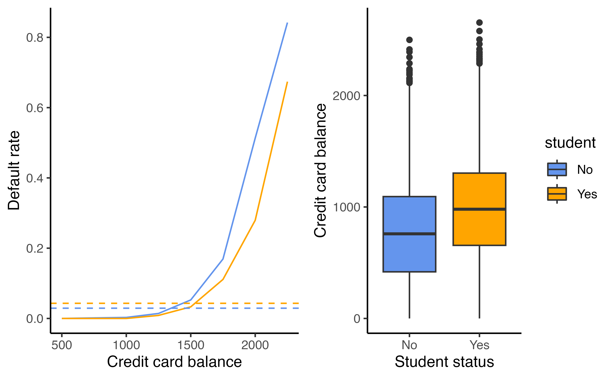

Logistic regression
Recap
- Last week we had a linear regression refresher
- We covered how to write a linear model in matrix form
- We learned how to minimize RSS to calculate \(\hat{\beta}\) with \((\mathbf{X^TX)^{-1}X^Ty}\)
- Linear regression is a great tool when we have a continuous outcome
- We are going to learn some fancy ways to do even better in the future
Classification
Classification
What are some examples of classification problems?
- Qualitative response variable in an unordered set, \(\mathcal{C}\)
eye color\(\in\){blue, brown, green}email\(\in\){spam, not spam}- Response, \(Y\) takes on values in \(\mathcal{C}\)
- Predictors are a vector, \(X\)
- The task: build a function \(C(X)\) that takes \(X\) and predicts \(Y\), \(C(X)\in\mathcal{C}\)
- Many times we are actually more interested in the probabilities that \(X\) belongs to each category in \(\mathcal{C}\)
Example: Credit card default
Code
set.seed(1)
Default |>
sample_frac(size = 0.25) |>
ggplot(aes(balance, income, color = default)) +
geom_point(pch = 4) +
scale_color_manual(values = c("cornflower blue", "red")) +
theme_classic() +
theme(legend.position = "top") -> p1
p2 <- ggplot(Default, aes(x = default, y = balance, fill = default)) +
geom_boxplot() +
scale_fill_manual(values = c("cornflower blue", "red")) +
theme_classic() +
theme(legend.position = "none")
p3 <- ggplot(Default, aes(x = default, y = income, fill = default)) +
geom_boxplot() +
scale_fill_manual(values = c("cornflower blue", "red")) +
theme_classic() +
theme(legend.position = "none")
grid.arrange(p1, p2, p3, ncol = 3, widths = c(2, 1, 1))Can we use linear regression?
We can code Default as
\[Y = \begin{cases} 0 & \textrm{if }\texttt{No}\\ 1&\textrm{if }\texttt{Yes}\end{cases}\] Can we fit a linear regression of \(Y\) on \(X\) and classify as Yes if \(\hat{Y}> 0.5\)?
- In this case of a binary outcome, linear regression is okay (it is equivalent to linear discriminant analysis, you can read more about that in your book!)
- \(E[Y|X=x] = P(Y=1|X=x)\), so it seems like this is a pretty good idea!
- The problem: Linear regression can produce probabilities less than 0 or greater than 1 😱
Can we use linear regression?
We can code Default as
\[Y = \begin{cases} 0 & \textrm{if }\texttt{No}\\ 1&\textrm{if }\texttt{Yes}\end{cases}\] Can we fit a linear regression of \(Y\) on \(X\) and classify as Yes if \(\hat{Y}> 0.5\)?
What may do a better job?
- Logistic regression!
Linear versus logistic regression
Code
Default <- Default |>
mutate(
p = glm(default ~ balance, data = Default, family = "binomial") |>
predict(type = "response"),
p2 = lm(I(default == "Yes") ~ balance, data = Default) |> predict(),
def = ifelse(default == "Yes", 1, 0)
)
Default |>
sample_frac(0.25) |>
ggplot(aes(balance, p2)) +
geom_hline(yintercept = c(0, 1), lty = 2, size = 0.2) +
geom_line(color = "cornflower blue") +
geom_point(aes(balance, def), shape = "|", color = "orange") +
theme_classic() +
labs(y = "probability of default") -> p1
Default |>
sample_frac(0.25) |>
ggplot(aes(balance, p)) +
geom_hline(yintercept = c(0, 1), lty = 2, size = 0.2) +
geom_line(color = "cornflower blue") +
geom_point(aes(balance, def), shape = "|", color = "orange") +
theme_classic() +
labs(y = "probability of default") -> p2
grid.arrange(p1, p2, ncol = 2)Which does a better job at predicting the probability of default?
- The orange marks represent the response \(Y\in\{0,1\}\)
Linear Regression
What if we have \(>2\) possible outcomes? For example, someone comes to the emergency room and we need to classify them according to their symptoms
\[ \begin{align} Y = \begin{cases} 1& \textrm{if }\texttt{stroke}\\2&\textrm{if }\texttt{drug overdose}\\3&\textrm{if }\texttt{epileptic seizure}\end{cases} \end{align} \]
What could go wrong here?
- The coding implies an ordering
- The coding implies equal spacing (that is the difference between
strokeanddrug overdoseis the same asdrug overdoseandepileptic seizure)
Linear Regression
What if we have \(>2\) possible outcomes? For example, someone comes to the emergency room and we need to classify them according to their symptoms
\[ \begin{align} Y = \begin{cases} 1& \textrm{if }\texttt{stroke}\\2&\textrm{if }\texttt{drug overdose}\\3&\textrm{if }\texttt{epileptic seizure}\end{cases} \end{align} \]
- Linear regression is not appropriate here
- Mutliclass logistic regression or discriminant analysis are more appropriate
Logistic Regression
\[ p(X) = \frac{e^{\beta_0+\beta_1X}}{1+e^{\beta_0+\beta_1X}} \]
- Note: \(p(X)\) is shorthand for \(P(Y=1|X)\)
- No matter what values \(\beta_0\), \(\beta_1\), or \(X\) take \(p(X)\) will always be between 0 and 1
Logistic Regression
\[ p(X) = \frac{e^{\beta_0+\beta_1X}}{1+e^{\beta_0+\beta_1X}} \]
We can rearrange this into the following form:
\[ \log\left(\frac{p(X)}{1-p(X)}\right) = \beta_0 + \beta_1 X \]
What is this transformation called?
- This is a log odds or logit transformation of \(p(X)\)
Linear versus logistic regression
Logistic regression ensures that our estimates for \(p(X)\) are between 0 and 1 🎉
Maximum Likelihood
Refresher: How did we estimate \(\hat\beta\) in linear regression?
Maximum Likelihood
Refresher: How did we estimate \(\hat\beta\) in linear regression?
In logistic regression, we use maximum likelihood to estimate the parameters
\[\mathcal{l}(\beta_0,\beta_1)=\prod_{i:y_i=1}p(x_i)\prod_{i:y_i=0}(1-p(x_i))\]
- This likelihood give the probability of the observed ones and zeros in the data
- We pick \(\beta_0\) and \(\beta_1\) to maximize the likelihood
- We’ll let
Rdo the heavy lifting here
Let’s see it in R
# A tibble: 2 × 5
term estimate std.error statistic p.value
<chr> <dbl> <dbl> <dbl> <dbl>
1 (Intercept) -10.7 0.361 -29.5 3.62e-191
2 balance 0.00550 0.000220 25.0 1.98e-137- Use the
logistic_reg()function in R with theglmengine
Making predictions
What is our estimated probability of default for someone with a balance of $1000?
| term | estimate | std.error | statistic | p.value |
|---|---|---|---|---|
| (Intercept) | -10.6513306 | 0.3611574 | -29.49221 | 0 |
| balance | 0.0054989 | 0.0002204 | 24.95309 | 0 |
\[ \hat{p}(X) = \frac{e^{\hat{\beta}_0+\hat{\beta}_1X}}{1+e^{\hat{\beta}_0+\hat{\beta}_1X}}=\frac{e^{-10.65+0.0055\times 1000}}{1+e^{-10.65+0.0055\times 1000}}=0.006 \]
Making predictions
What is our estimated probability of default for someone with a balance of $2000?
| term | estimate | std.error | statistic | p.value |
|---|---|---|---|---|
| (Intercept) | -10.6513306 | 0.3611574 | -29.49221 | 0 |
| balance | 0.0054989 | 0.0002204 | 24.95309 | 0 |
\[ \hat{p}(X) = \frac{e^{\hat{\beta}_0+\hat{\beta}_1X}}{1+e^{\hat{\beta}_0+\hat{\beta}_1X}}=\frac{e^{-10.65+0.0055\times 2000}}{1+e^{-10.65+0.0055\times 2000}}=0.586 \]
Logistic regression example
Let’s refit the model to predict the probability of default given the customer is a student
| term | estimate | std.error | statistic | p.value |
|---|---|---|---|---|
| (Intercept) | -3.5041278 | 0.0707130 | -49.554219 | 0.0000000 |
| studentYes | 0.4048871 | 0.1150188 | 3.520181 | 0.0004313 |
\[P(\texttt{default = Yes}|\texttt{student = Yes}) = \frac{e^{-3.5041+0.4049\times1}}{1+e^{-3.5041+0.4049\times1}}=0.0431\]
How will this change if student = No?
\[P(\texttt{default = Yes}|\texttt{student = No}) = \frac{e^{-3.5041+0.4049\times0}}{1+e^{-3.5041+0.4049\times0}}=0.0292\]
Multiple logistic regression
\[\log\left(\frac{p(X)}{1-p(X)}\right)=\beta_0+\beta_1X_1+\dots+\beta_pX_p\] \[p(X) = \frac{e^{\beta_0+\beta_1X_1+\dots+\beta_pX_p}}{1+e^{\beta_0+\beta_1X_1+\dots+\beta_pX_p}}\]
| term | estimate | std.error | statistic | p.value |
|---|---|---|---|---|
| (Intercept) | -10.8690452 | 0.4922555 | -22.080088 | 0.0000000 |
| balance | 0.0057365 | 0.0002319 | 24.737563 | 0.0000000 |
| income | 0.0000030 | 0.0000082 | 0.369815 | 0.7115203 |
| studentYes | -0.6467758 | 0.2362525 | -2.737646 | 0.0061881 |
- Why is the coefficient for
studentnegative now when it was positive before?
Confounding
What is going on here?
Confounding
- Students tend to have higher balances than non-students
- Their marginal default rate is higher
- For each level of balance, students default less
- Their conditional default rate is lower
Logistic regression for more than two classes
\[P(Y=k|X) = \frac{e ^{\beta_{0k}+\beta_{1k}X_1+\dots+\beta_{pk}X_p}}{\sum_{l=1}^Ke^{\beta_{0l}+\beta_{1l}X_1+\dots+\beta_{pl}X_p}}\]
- So far we’ve discussed binary outcome data
- We can generalize this to situations with multiple classes
- Here we have a linear function for each of the \(K\) classes
- This is known as multinomial logistic regression
A bit about “odds”
- The “odds” tell you how likely an event is
- 🌂 Let’s say there is a 60% chance of rain today * What is the probability that it will rain?
- \(p = 0.6\)
- What is the probability that it won’t rain?
- \(1-p = 0.4\)
- What are the odds that it will rain?
- 3 to 2, 3:2, \(\frac{0.6}{0.4} = 1.5\)
Transforming logs
- How do you “undo” a \(\log\) base \(e\)?
- Use \(e\)! For example:
- \(e^{\log(10)} = 10\)
- \(e^{\log(1283)} = 1283\)
- \(e^{\log(x)} = x\)
Transforming logs
How would you get the odds from the log(odds)?
- How do you “undo” a \(\log\) base \(e\)?
- Use \(e\)! For example:
- \(e^{\log(10)} = 10\)
- \(e^{\log(1283)} = 1283\)
- \(e^{\log(x)} = x\)
- \(e^{\log(odds)}\) = odds
Transforming odds
- odds = \(\frac{\pi}{1-\pi}\)
- Solving for \(\pi\)
- \(\pi = \frac{\textrm{odds}}{1+\textrm{odds}}\)
- Plugging in \(e^{\log(odds)}\) = odds
- \(\pi = \frac{e^{\log(odds)}}{1+e^{\log(odds)}}\)
- Plugging in \(\log(odds) = \beta_0 + \beta_1x\)
- \(\pi = \frac{e^{\beta_0 + \beta_1x}}{1+e^{\beta_0 + \beta_1x}}\)
The logistic model
- ✌️ forms
| Form | Model |
|---|---|
| Logit form | \(\log\left(\frac{\pi}{1-\pi}\right) = \beta_0 + \beta_1x\) |
| Probability form | \(\Large\pi = \frac{e^{\beta_0 + \beta_1x}}{1+e^{\beta_0 + \beta_1x}}\) |
The logistic model
| probability | odds | log(odds) |
|---|---|---|
| \(\pi\) | \(\frac{\pi}{1-\pi}\) | \(\log\left(\frac{\pi}{1-\pi}\right)=l\) |
⬅️
| log(odds) | odds | probability |
|---|---|---|
| \(l\) | \(e^l\) | \(\frac{e^l}{1+e^l} = \pi\) |
The logistic model
- ✌️ forms
- log(odds): \(l = \beta_0 + \beta_1x\)
- P(Outcome = Yes): \(\Large\pi =\frac{e^{\beta_0 + \beta_1x}}{1+e^{\beta_0 + \beta_1x}}\)
Odds ratios
A study investigated whether a handheld device that sends a magnetic pulse into a person’s head might be an effective treatment for migraine headaches.
- Researchers recruited 200 subjects who suffered from migraines
- randomly assigned them to receive either the TMS (transcranial magnetic stimulation) treatment or a placebo treatment
- Subjects were instructed to apply the device at the onset of migraine symptoms and then assess how they felt two hours later. (either Pain-free or Not pain-free)
Odds ratios
What is the explanatory variable?
A study investigated whether a handheld device that sends a magnetic pulse into a person’s head might be an effective treatment for migraine headaches.
- Researchers recruited 200 subjects who suffered from migraines
- randomly assigned them to receive either the TMS (transcranial magnetic stimulation) treatment or a placebo treatment
- Subjects were instructed to apply the device at the onset of migraine symptoms and then assess how they felt two hours later (either Pain-free or Not pain-free)
Odds ratios
What type of variable is this?
A study investigated whether a handheld device that sends a magnetic pulse into a person’s head might be an effective treatment for migraine headaches.
- Researchers recruited 200 subjects who suffered from migraines
- randomly assigned them to receive either the TMS (transcranial magnetic stimulation) treatment or a placebo treatment
- Subjects were instructed to apply the device at the onset of migraine symptoms and then assess how they felt two hours later (either Pain-free or Not pain-free)
Odds ratios
What is the outcome variable?
A study investigated whether a handheld device that sends a magnetic pulse into a person’s head might be an effective treatment for migraine headaches.
- Researchers recruited 200 subjects who suffered from migraines
- randomly assigned them to receive either the TMS (transcranial magnetic stimulation) treatment or a placebo treatment
- Subjects were instructed to apply the device at the onset of migraine symptoms and then assess how they felt two hours later (either Pain-free or Not pain-free)
Odds ratios
What type of variable is this?
A study investigated whether a handheld device that sends a magnetic pulse into a person’s head might be an effective treatment for migraine headaches.
- Researchers recruited 200 subjects who suffered from migraines
- randomly assigned them to receive either the TMS (transcranial magnetic stimulation) treatment or a placebo treatment
- Subjects were instructed to apply the device at the onset of migraine symptoms and then assess how they felt two hours later (either Pain-free or Not pain-free)
Odds ratios
| TMS | Placebo | Total | |
|---|---|---|---|
| Pain-free two hours later | 39 | 22 | 61 |
| Not pain-free two hours later | 61 | 78 | 139 |
| Total | 100 | 100 | 200 |
- We can compare the results using odds
- What are the odds of being pain-free for the placebo group?
- \((22/100)/(78/100) = 22/78 = 0.282\)
- What are the odds of being pain-free for the treatment group?
- \(39/61 = 0.639\)
- Comparing the odds what can we conclude?
- TMS increases the likelihood of success
Odds ratios
| TMS | Placebo | Total | |
|---|---|---|---|
| Pain-free two hours later | 39 | 22 | 61 |
| Not pain-free two hours later | 61 | 78 | 139 |
| Total | 100 | 100 | 200 |
- We can summarize this relationship with an odds ratio: the ratio of the two odds
- \(\Large OR = \frac{39/61}{22/78} = \frac{0.639}{0.282} = 2.27\)
- “the odds of being pain free were 2.27 times higher with TMS than with the placebo”
Odds ratios
What if we wanted to calculate this in terms of Not pain-free (with pain-free) as the referent?
| TMS | Placebo | Total | |
|---|---|---|---|
| Pain-free two hours later | 39 | 22 | 61 |
| Not pain-free two hours later | 61 | 78 | 139 |
| Total | 100 | 100 | 200 |
- \(\Large OR = \frac{61/39}{78/22} = \frac{1.564}{3.545} = 0.441\)
- the odds for still being in pain for the TMS group are 0.441 times the odds of being in pain for the placebo group
Odds ratios
What changed here?
| TMS | Placebo | Total | |
|---|---|---|---|
| Pain-free two hours later | 39 | 22 | 61 |
| Not pain-free two hours later | 61 | 78 | 139 |
| Total | 100 | 100 | 200 |
- \(\Large OR = \frac{78/22}{61/39} = \frac{3.545}{1.564} = 2.27\)
- the odds for still being in pain for the placebo group are 2.27 times the odds of being in pain for the TMS group
Odds ratios
In general, it’s more natural to interpret odds ratios > 1, you can flip the referent to do so
| TMS | Placebo | Total | |
|---|---|---|---|
| Pain-free two hours later | 39 | 22 | 61 |
| Not pain-free two hours later | 61 | 78 | 139 |
| Total | 100 | 100 | 200 |
\(\Large OR = \frac{78/22}{61/39} = \frac{3.545}{1.564} = 2.27\)
the odds for still being in pain for the placebo group are 2.27 times the odds of being in pain for the TMS group
Application Exercise
5000 women were enrolled in a study and were randomly assigned to receive either letrozole or a placebo. The primary response variable of interest was disease-free survival.
| letrozole | placebo | total | |
|---|---|---|---|
| death or disease | 185 | 341 | 526 |
| no death or disease | 2390 | 2241 | 4631 |
| total | 2575 | 2582 | 5157 |
- Calculate the odds ratio of death or disease in the placebo group versus the treatment group
- Calculate the odds ratio of no death or disease in the treatment group versus the placebo group
- Calculate the odds ratio of death or disease in the treatment group versus the placebo group
04:00
Odds ratios
Let’s look at some Titanic data. We are interested in whether the passenger reported being female is related to whether they survived.
| Female | Male | Total | |
|---|---|---|---|
| Survived | 308 | 142 | 450 |
| Died | 154 | 709 | 863 |
| Total | 462 | 851 | 1313 |
Odds ratios
What are the odds of surviving for females versus males?
| Female | Male | Total | |
|---|---|---|---|
| Survived | 308 | 142 | 450 |
| Died | 154 | 709 | 863 |
| Total | 462 | 851 | 1313 |
\[\Large OR = \frac{308/154}{142/709} = \frac{2}{0.2} = 9.99\]
Odds ratios
How do you interpret this?
| Female | Male | Total | |
|---|---|---|---|
| Survived | 308 | 142 | 450 |
| Died | 154 | 709 | 863 |
| Total | 462 | 851 | 1313 |
\[\Large OR = \frac{308/154}{142/709} = \frac{2}{0.2} = 9.99\] the odds of surviving for the female passengers was 9.99 times the odds of surviving for the male passengers
Odds ratios
What if we wanted to fit a model? What would the equation be?
| Female | Male | Total | |
|---|---|---|---|
| Survived | 308 | 142 | 450 |
| Died | 154 | 709 | 863 |
| Total | 462 | 851 | 1313 |
\[\Large \log(\textrm{odds of survival}) = \beta_0 + \beta_1 \textrm{Female}\]
Odds ratios
\[\Large \log(\textrm{odds of survival}) = \beta_0 + \beta_1 \textrm{Female}\]
Odds Ratios
How do you interpret this result?
Odds Ratios
How do you interpret this result?
Odds Ratios
How do you interpret this result?
logistic_reg() |>
set_engine("glm") |>
fit(Survived ~ Sex, data = Titanic) |>
tidy(exponentiate = TRUE) # A tibble: 2 × 5
term estimate std.error statistic p.value
<chr> <dbl> <dbl> <dbl> <dbl>
1 (Intercept) 0.200 0.0919 -17.5 1.70e-68
2 Sexfemale 9.99 0.135 17.1 2.91e-65[1] 9.99the odds of surviving for the female passengers was 9.99 times the odds of surviving for the male passengers
Odds ratios
What if the explanatory variable is continuous?
# A tibble: 2 × 5
term estimate std.error statistic p.value
<chr> <dbl> <dbl> <dbl> <dbl>
1 (Intercept) -19.2 5.63 -3.41 0.000644
2 GPA 5.45 1.58 3.45 0.000553A one unit increase in GPA yields a 5.45 increase in the log odds of acceptance
Odds ratios
What if the explanatory variable is continuous?
logistic_reg() |>
set_engine("glm") |>
fit(Acceptance ~ GPA, data = MedGPA) |>
tidy(exponentiate = TRUE) # A tibble: 2 × 5
term estimate std.error statistic p.value
<chr> <dbl> <dbl> <dbl> <dbl>
1 (Intercept) 4.56e-9 5.63 -3.41 0.000644
2 GPA 2.34e+2 1.58 3.45 0.000553A one unit increase in GPA yields a 234-fold increase in the odds of acceptance
- 😱 that seems huge! Remember: the interpretation of these coefficients depends on your units (the same as in ordinary linear regression).
Odds ratios
How could we get the odds associated with increasing GPA by 0.1?
# A tibble: 2 × 5
term estimate std.error statistic p.value
<chr> <dbl> <dbl> <dbl> <dbl>
1 (Intercept) -19.2 5.63 -3.41 0.000644
2 GPA 5.45 1.58 3.45 0.000553A one-tenth unit increase in GPA yields a 1.73-fold increase in the odds of acceptance
Odds ratios
How could we get the odds associated with increasing GPA by 0.1?
MedGPA <- MedGPA |>
mutate(GPA_10 = GPA * 10)
logistic_reg() |>
set_engine("glm") |>
fit(Acceptance ~ GPA_10, data = MedGPA) |>
tidy(exponentiate = TRUE)# A tibble: 2 × 5
term estimate std.error statistic p.value
<chr> <dbl> <dbl> <dbl> <dbl>
1 (Intercept) 0.00000000456 5.63 -3.41 0.000644
2 GPA_10 1.73 0.158 3.45 0.000553A one-tenth unit increase in GPA yields a 1.73-fold increase in the odds of acceptance
Application Exercise
Using the Default data from the ISLR package, fit a logistic regression model predicting whether a customer defaults with whether they are a student and their current balance.
Here is some code to get you started:
05:00
Dr. Lucy D’Agostino McGowan adapted from slides by Hastie & Tibshirani